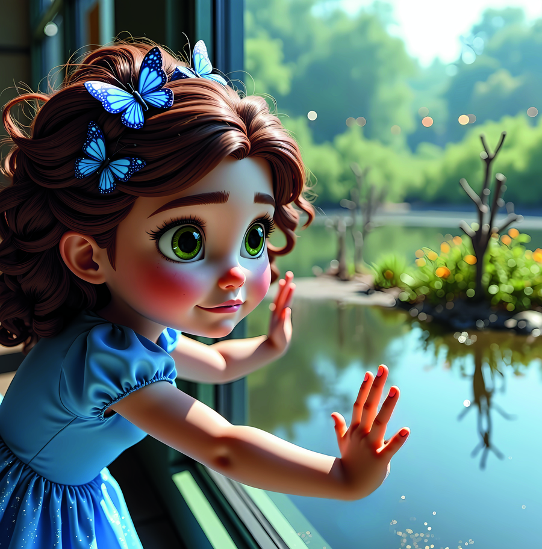
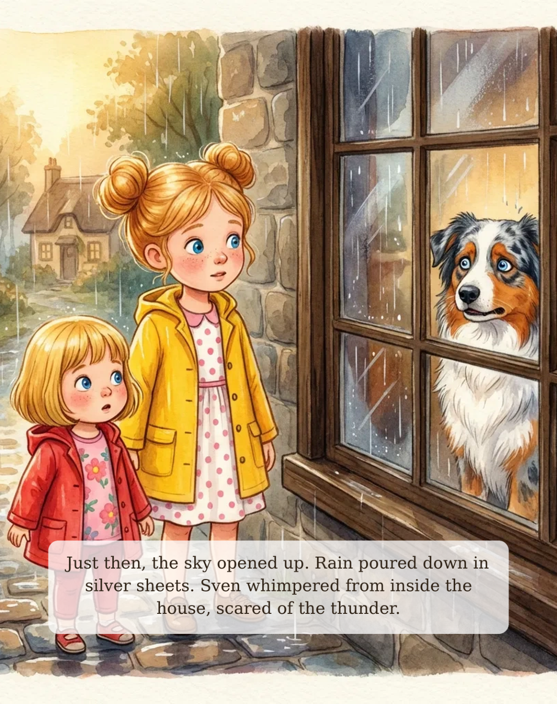
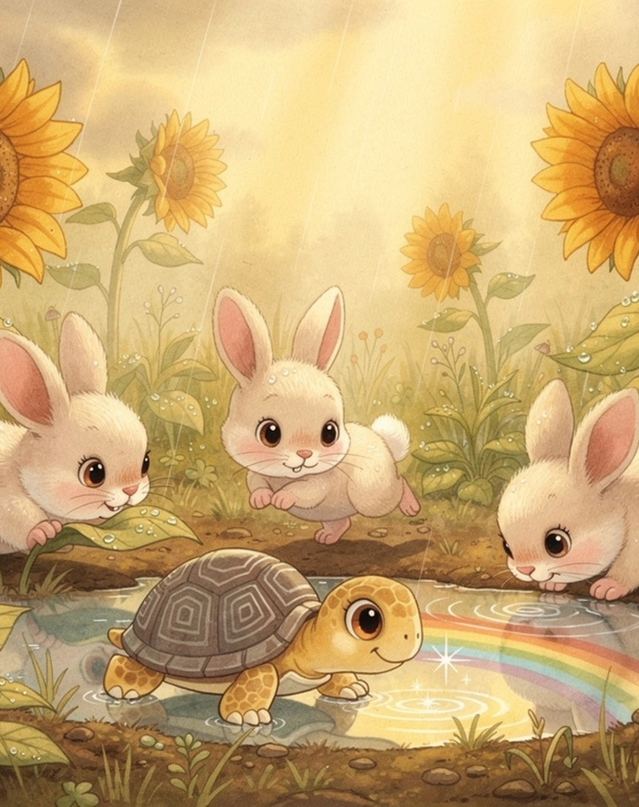

Browse All Posts

The Ultimate Guide to Ocean Books for Kids 🌊
Comprehensive guide covering the best ocean and aquarium picture books for ages 0–8. Everything in one place.
Read More →
Ocean Animals & Picture Books: A Learning Guide 🐬
Marine science and curiosity through children’s literature. Spark a lifelong love of ocean creatures.
Read More →
Raising Ocean-Loving Kids: Complete Guide 🏖️
From books to gifts to aquarium visits — the full parenting guide for raising ocean-loving kids.
Read More →
Rainy Day Books & Activities: Complete Kids Guide 🌧️
The ultimate rainy day guide combining book recommendations and family activities for every age.
Read More →
Best Mindfulness Picture Books for Kids (2026) 🧘
Picture books that teach children to breathe, be present, and find calm. Mindfulness is 2026’s biggest parenting trend.
Read More →
Best Picture Books for Kindergarten Readiness 2026 🎒
Emotional readiness is the #1 predictor of kindergarten success. These books build the social-emotional skills kids actually need.
Read More →
Screen-Free Reading Activities for Kids (2026 Guide) 📵
Pinterest’s #1 2026 parenting trend is going analog. Picture books + paired activities that replace screen time with wonder.
Read More →
The Sun in the Rain — Book 2 ✨
Guinea Padre's newest adventure for Laidee and Mills. A rainy day story about finding beauty in the unexpected.
Read More →Spring Break Aquarium Guide for Families 2026 🌊
Your complete 2026 guide: 7 books to read before you go, toddler tips, what kids love most, and how to make it educational.
Read More →Best Children's Books About Anxiety and Worry 💛
Expert-picked picture books for anxious kids ages 3-8. Stories that help children feel seen, brave, and calm.
Read More →Best Children's Books About Self-Regulation 🌟
Top SEL pick 2026. Picture books that teach self-regulation skills for preschool and early elementary.
Read More →
Books to Help Kids With Big Feelings 💪
The best picture books for naming emotions, teaching regulation, and bringing calm to hard moments. Ages 3–7.
Read More →
Best Picture Books for 4-Year-Olds 📚
Parent-tested, kid-approved picks that 4-year-olds beg to reread, night after night.
Read More →
Summer Reading List for Preschoolers 2026 ☀️
7 picture books that beat the summer slide and make this the most magical reading summer yet.
Read More →
Best Book Gifts for Toddlers & 3-Year-Olds 🎁
The books grandparents, aunts, and uncles come back to year after year. Perfect for every occasion.
Read More →
Children's Books About Finding Joy 🌟
Stories that teach children joy isn't something that happens to you — it's something you learn to find.
Read More →
Best Read-Aloud Books for Preschoolers 📢
The picture books that turn story time into a performance — and preschoolers into readers for life.
Read More →
Children's Books About Weather ⛅
Sun, rain, storms and seasons explored through picture books that spark real scientific curiosity.
Read More →
Ocean Science Picture Books for Kids 🔬
Spark a love of marine biology early with these vivid, accurate, and irresistible ocean STEM books.
Read More →
Best Empathy Books for Children Ages 3–8 🤝
Picture books that build kindness, perspective-taking, and emotional intelligence from the very first page.
Read More →Children's Books About Trying New Things 🌱
Stories for hesitant little adventurers that turn fear of the unknown into curiosity and courage.
Read More →Best Gratitude Picture Books for Kids
Teach thankfulness and contentment with these beautifully crafted picture books.
Read More →
Best Emotional Resilience Books for Children
Build resilience and emotional strength with these powerful SEL picture books.
Read More →
Best New Children's Books of 2026
The most exciting new picture books of 2026, led by Guinea Padre's The Sun in the Rain.
Read More →Children's Books About Change & Adaptability
Help your child embrace unexpected changes with these powerful, gentle picture books.
Read More →A Fintastic Day at the Aquarium
The magical story that started it all!
Read More →